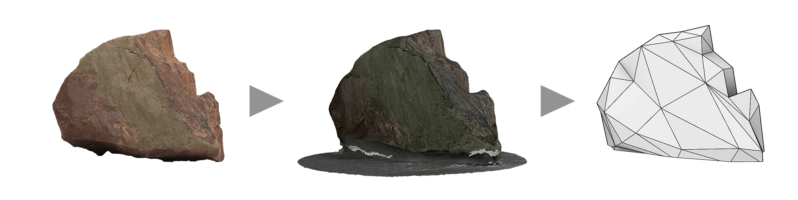
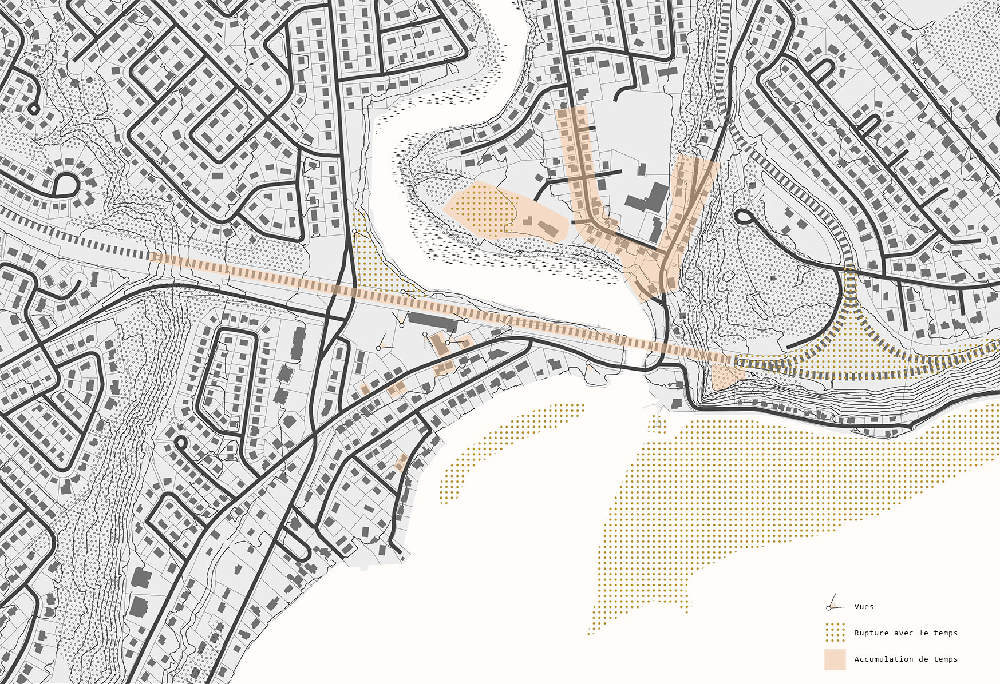
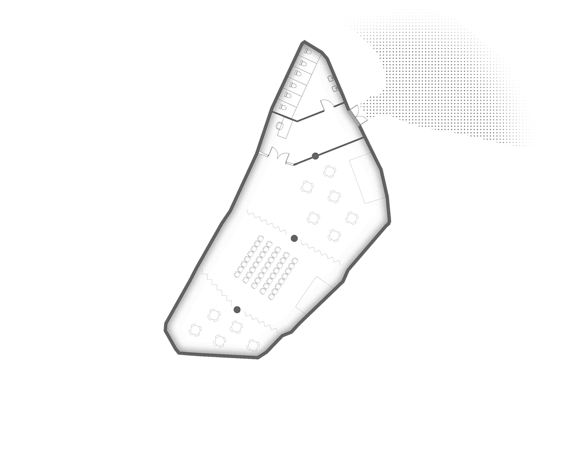
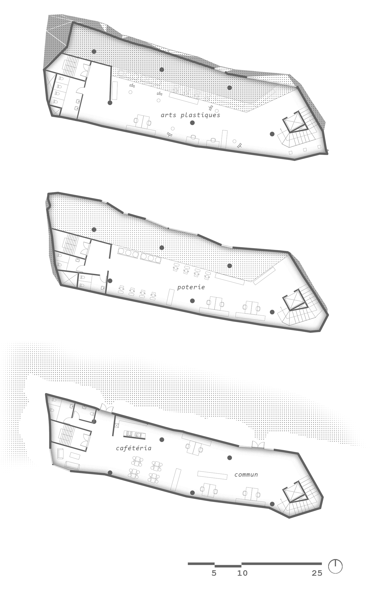
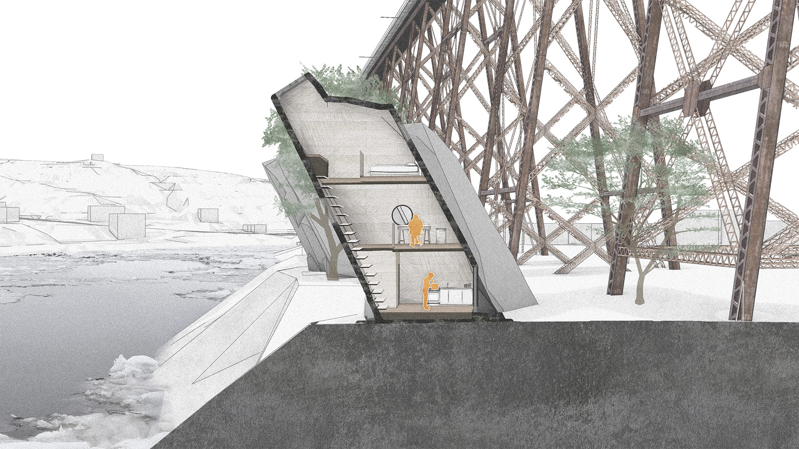
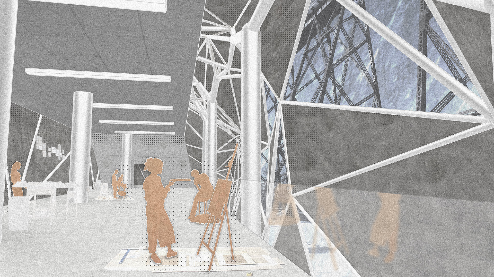

External view: workshop building and climbing center
External view: workshop building and climbing center
Quebec City’s neighborhood of Cap-Rouge (“Red Cape”) is named after the color of the schists on the cape that overhangs it. When walking on the beach, the visitor is surrounded by rocky terrain, immersed in an alien and lithic landscape. Throughout 2020, the neighborhood’s telecommuting citizens had the opportunity to rediscover the beauty of this scenery.
In order to make this newfound, small-scale lifestyle last, ROC proposes an artistic community center emphasizing the relationship between the individual and the substance of the earth. The project includes multiple buildings and leisure spaces that will showcase the work of local artists produced in its own pottery and plastic arts workshop in the interest of catalyzing social interaction between artists and the community.
Cap-Rouge’s soil is both the formal inspiration of the center and the focal point of the activities within it. In this sense, the shape of the building envelope comes directly from schist specimens collected on site, and the buildings’ lightweight concrete cladding is prefabricated to reflect the unique character of the area’s rocks. The pavilions of the complex are supported by steel arborescent structures which allow greater adaptability to the project’s irregular shapes.
Inspiration: Cap-Rouge schist specimens
Mapping: space-time relations in the neighborhood
Gallery sector
Multipurpose hall

Artist residences
Workshops

Structural detail
Site plan

Isometric overview
Perspective section - Residence
Interior perspective - Workshops

Interior perspective - Art gallery